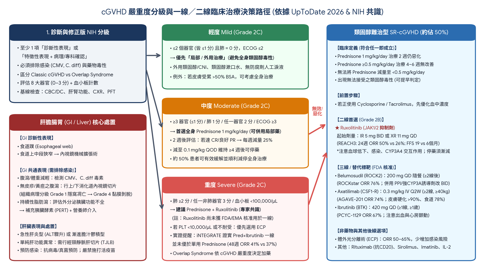
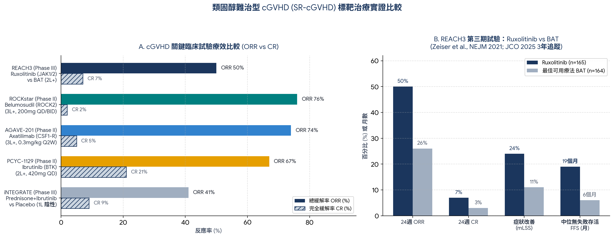

1. 治療前評估與修正版 NIH 嚴重度分級
cGVHD 的治療目標在於持續減輕或消除症狀負擔、失能與疾病活性，同時將長期免疫抑制副作用降至最低，最終達成安全停藥且不復發，並兼顧保留移植物抗腫瘤效應（GVT）。超過三分之一接受異體 HCT 的患者需要全身性治療。
治療前標準基線檢查
- 臨床與體能評分：完整 8 大器官系統評分（NIH 0–3 分表單）、紀錄既往 GVHD 預防／治療藥物與共病；評估 ECOG 或 Karnofsky 體能狀態（PS）。
- 實驗室與影像：CBC/DC（特別關注血小板）、電解質、血糖、肝腎功能（ALP、Bilirubin、ALT/AST）；胸部 X 光；有咳嗽或喘促者必做肺功能檢查（PFT）。
UpToDate 修正版 NIH 嚴重度分級（指導一線決策）
| 嚴重度分級 | 修正版 NIH 判定條件（8大器官各評 0–3 分） | 初始治療建議 | 實證等級 |
|---|---|---|---|
| 輕度 Mild | 1–2 個器官（分數皆 ≤1 分）且肺部 = 0 分，無顯著功能障礙（ECOG ≤2） | 局部／外用治療 | Grade 2C |
| 中度 Moderate | 符合任一：≥3 個器官（≤1 分）；或肺部 1 分；或任一非肺器官 2 分；或功能障礙（ECOG ≥3） | 全身 Prednisone | Grade 2C |
| 重度 Severe | 符合任一：肺部 ≥2 分；或任一非肺器官 3 分；或血小板 <100,000/µL（UpToDate 增列） | Prednisone + Ruxolitinib | Grade 2C |
2. 初始治療策略（依嚴重度與 Overlap Syndrome 分層）

圖 1：依據 UpToDate 2026（Robert Zeiser, MD）與 ASTCT/EBMT 共識整理之 cGVHD 分級、一線治療、SR-cGVHD 標靶選擇與肝膽腸胃關鍵處置流程。
- 輕度 cGVHD：建議局部／外用治療而非全身治療，以避免全身類固醇毒性；唯若皮膚受累非常廣泛（如 >50% BSA），可與病人討論啟用全身治療。
- 中度 cGVHD：建議單用全身性 Prednisone（1 mg/kg/day），可併用局部治療緩解局部症狀。多項隨機試驗證實一線併用 Azathioprine、MMF、Cyclosporine、Thalidomide 或 Hydroxychloroquine 均未提升緩解率或縮短療程。
- 重度 cGVHD：UpToDate 作者群建議初始即給予 Prednisone + Ruxolitinib（基於專家共識與 SR-cGVHD 療效；註：Ruxolitinib 尚未獲 FDA/EMA 核准一線，部分專家仍偏好單用 Prednisone）。若血小板 <10,000/µL、無法取得或不耐受，優先選用體外光分離術（ECP）。
- 一線陰性實證提醒（iNTEGRATE, JCO 2023）：第三期雙盲試驗（n=193）證實一線 Prednisone + Ibrutinib 與 Prednisone + 安慰劑之 48 週 ORR（41% vs 37%）與 96 週 ORR（27% vs 22%）無顯著差異，故不建議一線使用 Ibrutinib。
- Overlap Syndrome 處置：依 cGVHD 嚴重度決定；若因既有 aGVHD 已在服用類固醇但劑量不足，先調整至全劑量或加第二線藥；若已在「類固醇 + 第二線藥」下仍出現中重度 cGVHD，直接比照 SR-cGVHD 處置。
3. Prednisone 起始劑量、減量排程與療效評估
1 mg/kg/d
標準起始劑量（更高劑量無額外獲益）
~50%
全身 Prednisone 可達緩解並最終停藥之比例
第 2 週
首次療效評估點，決定減量或提早加藥
每 3 個月
依 NIH 標準之常規追蹤評估頻率
Prednisone 實戰減量與復發處理流程
- 第 2 週評估改善（CR 或良好 PR）：開始每週減量 25%，一路減至 0.10 mg/kg 隔日一次（QOD），於該劑量穩定維持 ≥4 週後可嘗試停藥（部分反覆發作者需極低劑量維持 ≥1 年）。
- 減量期惡化或復發：立即上調 2 個階梯或恢復至全劑量（1 mg/kg/day）治療 2–4 週，再轉為隔日給藥並維持至少 3 個月，方能重啟減量。
- 第 2 週穩定無改善或惡化：判定反應不佳，直接加上第二線藥物（比照 SR-cGVHD）。
- 長期副作用監測：感染、類固醇肌病、骨質疏鬆與缺血性骨壞死、高血糖、高血壓、白內障、皮膚萎縮、情緒波動與兒童生長遲緩。
4. 類固醇難治型 (SR-cGVHD) 定義與四大 FDA 標靶比較
約 50% 患者會進展為 SR-cGVHD，定義為符合下列任一項：(1) Prednisone 1 mg/kg/day 治療 2 週仍惡化；(2) Prednisone ≥0.5 mg/kg/day 治療 4–6 週維持穩定無改善；(3) 無法減量至 <0.5 mg/kg/day；或(4) 出現無法接受之類固醇毒性（註：皮膚硬化改善速度較慢）。若患者原本正服用 Cyclosporine 或 Tacrolimus，首要步驟是先確認並優化 CNI 血中治療濃度。

圖 2：(A) cGVHD 五大關鍵臨床試驗（REACH3、ROCKstar、AGAVE-201、PCYC-1129 與一線陰性試驗 iNTEGRATE）之 ORR 與 CR 比較（各試驗收案線數不同，不宜直接跨試驗比較）；(B) REACH3 第三期試驗中 Ruxolitinib 與最佳可用療法（BAT）之頭對頭比較（已更正 FFS 單位為「個月」）。
| 藥物 / 機轉 | FDA 核准適應症與劑量 | 關鍵試驗與核心療效 | 器官特色與臨床優勢 | 重要毒性與交互作用 |
|---|---|---|---|---|
| Ruxolitinib JAK1/2 抑制劑 二線首選 Grade 2B |
≥12 歲，≥1 線失敗。 UpToDate 起始：IR 5 mg BID（或 XR 11 mg QD）；FDA 仿單為 10 mg BID。 |
REACH3 (Phase III, n=329) 24週 ORR 50% vs 26% CR 7% vs 3%；mLSS 24% vs 11% 中位 FFS 19 vs 6 個月（3年追蹤確認） |
唯一具備第三期 RCT 優於 BAT 之實證；兒科（REACH5, 2026）亦證實有效；57% 成功減量類固醇。 | 血球低下（血小板 15%、嗜中性球 13%）、病毒/真菌感染；PLT <10,000/µL 禁用；停藥須漸減防戒斷症候群 (SIRS-like)；併用強 CYP3A4 抑制劑或 Fluconazole 須調降劑量。 |
| Belumosudil ROCK2 抑制劑 三線首選替代 |
≥12 歲，≥2 線失敗。 200 mg PO QD 隨餐。 |
ROCKstar (Phase II, n=132) ORR 76% (CR 2%) LSS 症狀改善 (≥7分) 70% |
下調 STAT3（抑 Th17/Tfh）、上調 STAT5（增 Treg），兼具抗發炎與抗纖維化。 | 疲倦、腹瀉、肝酵素升、肺炎 (7%)、高血壓 (6%)、胎兒毒性；併用強 CYP3A 誘導劑或 PPI 須增至 200 mg BID。 |
| Axatilimab 抗 CSF1-R 單抗 2024/08 FDA 核准 |
體重 ≥40 kg，≥2 線失敗。 0.3 mg/kg (上限 35 mg) IV Q2W（輸注 30 分鐘）。 |
AGAVE-201 (Phase II, n=80) ORR 74% (CR 5%) LSS 改善 (>5分) 60% 中位 FFS >11 個月；起效 <2 個月 |
阻斷促纖維化 M2 巨噬細胞分化！皮膚硬化反應 >90%、跨器官皆具顯著療效。 | 輸注反應 (8%，復發者先給抗組織胺+退燒藥)、輕微 ALT/AST/CK/澱粉酶/脂肪酶上升（全為 Grade ≤2）、胚胎毒性。 |
| Ibrutinib BTK 抑制劑 2L+ 可選 |
≥1 歲，≥1 線失敗。 420 mg PO QD。 |
PCYC-1129 (Phase II, n=42) ORR 67% (CR 21%)；近 2/3 可減類固醇至 ≤0.15 mg/kg/d。 |
多器官（皮膚、口腔、GI、肝）有效；惟一線 iNTEGRATE 陰性，僅用於二線以後。 | 出血、瘀青、感染、心房顫動、高血壓、口腔炎、血球低下。 |
5. 非藥物療法 (ECP / PUVA) 與其他後線選項
- 體外光分離術（ECP）：分離自體淋巴球經 8-MOP + UVA 照射後回輸。文獻回顧（n=735）ORR 50–65%（CR 30–35%），25–35% 成功減量類固醇；最大優勢為不額外增加感染風險，但嚴重心血管或腎衰竭者禁用。
- PUVA 光化學療法：適用於早期侷限於皮膚之 cGVHD（約 1/3 達 CR），起始劑量須降至常規 25% 防灼傷。
- Calcineurin 抑制劑（CsA / Tacrolimus）：可與 Prednisone 隔日併用減少缺血性骨壞死（13% vs 22%），須監測血中濃度並警惕腎毒性、低血鎂、高血鉀、高血壓與 TMA。
- 其他後線藥物（無直接頭對頭比較）：
- Rituximab（375 mg/m² IV QW×4）：對皮膚、口腔、肌肉骨骼反應佳（ORR 可達 86%），務必先篩檢防 HBV 再活化。
- Imatinib（TKI）：具抗纖維化潛力，約 1/3 改善皮膚硬化或關節活動度。
- Sirolimus：目標血中濃度 10 ng/mL，注意高血脂、TMA 與肝靜脈閉塞症（SOS/VOD，尤見於 Busulfan 預處理者）。
- MMF（1–1.5 g BID，注意嗜中性球低下與腸胃不適）、Bortezomib（注意周邊神經病變）、低劑量 IL-2（擴增 Treg，仍待更多研究）。
6. 肝膽腸胃與各器官局部支持照護
消化內科處置重點（GI cGVHD）
所有疑似 GI cGVHD 患者皆應會診腸胃科醫師與營養師：
- 腹瀉標準查核：必做糞便培養、C. difficile 毒素與 CMV；無皮疹或黃疸佐證之腹瀉應行上消化道內視鏡（含十二指腸抽吸與切片）及乙狀結腸鏡／大腸鏡切片。
- 食道狹窄：可行內視鏡機械擴張術（Bougienage）解除狹窄。
- 外分泌胰臟功能不全：持續性脂肪瀉給予胰臟酵素補充（PERT）及營養支持防體重減輕。
| 受累器官 | 局部症狀緩解處置 | 長期監測與預防要點 |
|---|---|---|
| 皮膚 | 潤膚膏、第一線外用類固醇或外用 CNI；廣泛（>50% BSA）考慮 ECP；硬化性病變配合物理治療防攣縮。 | 防傷口次發感染；長期免疫抑制者每年皮膚科篩檢皮膚癌；未癒合／增長病灶 2–4 週內轉診。 |
| 口腔 | 頻繁飲水、人工唾液、類固醇漱口水（使用前必先排除 HSV、HPV 與念珠菌感染）；難治者考慮 ECP。 | 良好口腔衛生＋局部塗氟防蛀；張口伸展防硬化受限；移植 >3 個月持續病灶須排除次發性口腔癌。 |
| 眼睛 | 無防腐劑人工淚液、類固醇眼藥水、外用 Tacrolimus；畏光戴太陽眼鏡；重度採鞏膜鏡（Scleral lens）或淚管塞。 | 由具移植經驗之眼科醫師追蹤；高度警覺感染性角膜炎；長期全身類固醇須定期追蹤白內障。 |
| 陰道／生殖道 | 局部雌激素（每日 2 週 → 每週 2 次）、Clobetasol 0.05%（BID 6–12 週 → 每週 2–3 次）、外用 CNI 或 Clindamycin 2% 凝膠；必要時用陰道擴張器。 | 早會診婦科；避免肥皂與緊身衣物；前 2 年每 3–6 個月婦科追蹤（可拍照紀錄客觀療效）。 |
| 肺／骨骼／內分泌 | 肺部：氧氣、支氣管擴張劑、吸入類固醇、肺復健；骨骼肌肉：物理／職能治療。 | 篩檢類固醇肌病與加速性骨質疏鬆；定期篩檢糖尿病、甲狀腺低下、性腺低下與腎上腺功能不全。 |
7. 感染預防、疫苗禁忌與 CYP3A4 交互作用紅旗
- 感染預防：依血球低下程度、免疫缺損與類固醇劑量給予抗菌、抗病毒、抗真菌預防及必要時免疫球蛋白（IVIG）補充。
- 疫苗原則：所有患者應接種肺炎鏈球菌、流感與 b 型嗜血桿菌（Hib）疫苗；所有 cGVHD 患者嚴禁施打減毒活疫苗（Live vaccines）。
- CYP3A4 藥物交互作用紅旗（UpToDate Table 4 精要）：
- 強抑制劑（併用 Ruxolitinib / CNI 須大幅減量）：Posaconazole、Voriconazole、Itraconazole、Ketoconazole、Clarithromycin、Ritonavir（含 Nirmatrelvir-ritonavir / Paxlovid）。
- 中度抑制劑（併用 Ruxolitinib 須注意調整）：Fluconazole、Isavuconazole、Letermovir、Erythromycin、Diltiazem、Verapamil、Amiodarone、葡萄柚汁。
- 強誘導劑（併用 Belumosudil 須加倍至 200 mg BID）：Rifampin、Carbamazepine、Phenytoin、Enzalutamide、聖約翰草（St. John's wort）。
8. 獨立證據查核與原文勘誤報告 (Evidence Audit)
治療篇查核結論：發現 UpToDate 原文 1 處單位筆誤，並核實 3 項臨床實務重要細節
- 【原文勘誤】REACH3 試驗之中位 FFS 單位：UpToDate 治療篇第 15 頁誤植為
median failure-free survival (FFS; 19 versus 6 percent)。經核對原始 NEJM 2021（Zeiser et al.）與 JCO 2025 三年最終追蹤報告，正確數值為中位無失敗存活期 >18.6 個月（約 19 個月）vs 5.7 個月（約 6 個月），單位應為「個月（months）」而非「百分比（percent）」。本筆記與圖表已全數更正。 - 【起始劑量差異】Ruxolitinib 起始劑量：REACH3 試驗與 FDA 仿單核准之 cGVHD 起始劑量為 10 mg BID；UpToDate 2026 建議以 IR 5 mg BID（或 XR 11 mg QD）起步再依耐受性調整。實務上因移植後常合併血球低下或併用 Azole 類抗真菌藥，從 5 mg BID 起步較安全，但若耐受良好且無交互作用應適時上調。
- 【2024–2026 最新核准狀態核實】：
- Axatilimab（Niktimvo）已於 2024 年 8 月獲美國 FDA 正式核准用於 ≥2 線失敗且體重 ≥40 kg 患者（AGAVE-201, NEJM 2024）。
- Ruxolitinib 用於一線重度 cGVHD 仍屬 Off-label（專家意見 Grade 2C），尚未獲 FDA/EMA 核准一線適應症。
- 兒科 REACH5 最終分析（Haematologica 2026）已進一步確立 Ruxolitinib 於 ≥2 至 <18 歲兒童之療效與安全性。